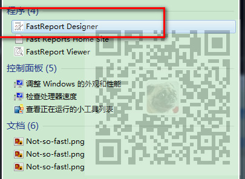
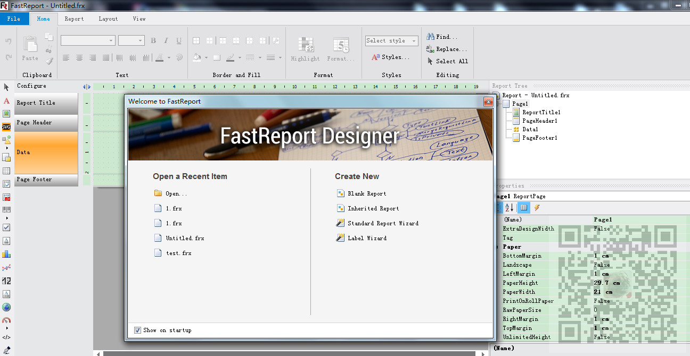

原文出处:本文由博客园博主霸道流氓提供。
原文连接:https://www.cnblogs.com/badaoliumangqizhi/p/11725852.html
原文连接:https://www.cnblogs.com/badaoliumangqizhi/p/11725852.html
场景
FastReport安装包下载、安装、去除使用限制以及工具箱中添加控件：
https://blog.csdn.net/BADAO_LIUMANG_QIZHI/article/details/100893794
Winform中使用FastReport实现简单的自定义PDF导出：
https://blog.csdn.net/BADAO_LIUMANG_QIZHI/article/details/100920681
在上面实现FastReport的导出PDF的实现。
我们可以通过report控件去设计并保存frx模板文件。
如果是直接给你一个frx模板文件，而你需要打开并修改要怎办。
注:
博客主页：
https://blog.csdn.net/badao_liumang_qizhi
关注公众号
霸道的程序猿
获取编程相关电子书、教程推送与免费下载。
实现
在项目中使用FastReport的控件只需要将其dll引进项目即可使用，
那么在电脑上再安装FastReport就是做设计，模板等作用的。
参照上面第一篇博客将FastReport安装。
安装完成之后在所有程序中搜索

打开设计程序

安装资源下载
关注公众号：
霸道的程序猿
回复：FastReport